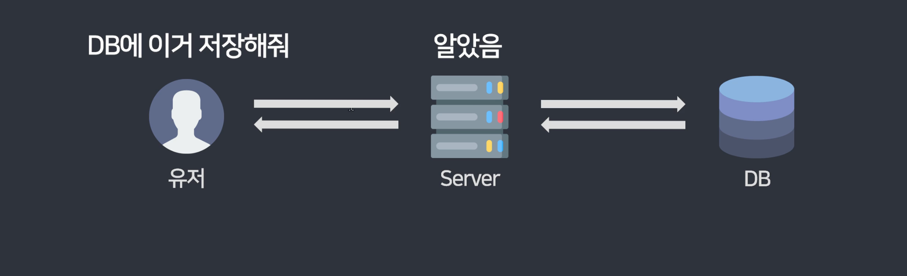

서버는 단순한 프로그램으로, 요청을 받아 처리하는 역할을 한다.
예를 들어,
즉, 서버는 사용자의 요청을 정확한 방식으로 전달받아야 원하는 데이터를 반환할 수 있다.
마음대로 요청하면 서버는 데이터를 주지 않는다.
서버에게 데이터를 요청하려면 두 가지 요소를 정확히 입력해야 한다.
📌 URL도 정확하게 작성해야 한다. 이를 엔드포인트(Endpoint) 라고 부른다.
정확한 method와 URL을 사용해야 서버가 요청을 정상적으로 처리한다.
REST(Representational State Transfer)는 좋은 API를 설계하는 원칙을 정의한 개념이다.
RESTful API는 이 원칙을 따르는 API를 의미하며, 다음과 같은 특징을 가진다.
Uniform Interface (일관성 있는 인터페이스)
Client-Server 역할 분리
Stateless (무상태성)
Cacheable (캐싱 가능성)
Layered System (계층 구조)
Code on demand (선택적 실행 코드 지원)
🎯 REST 원칙을 완벽하게 따르는 서버는 거의 없으며, 권장사항으로 참고하는 개념이다.
대부분은 Method와 URL을 명확하게 구성하는 것만으로도 RESTful API라고 부른다.
RESTful API를 만들 때 URL을 보기 쉽게 설계하는 것이 중요하다.
✔ URL은 동사가 아니라 명사로 구성
✔ 언더바 _ 대신 대시 - 사용
✔ 파일 확장자 (.html 등) 제거
✔ 하위 경로는 / 기호로 구분
facebook.com/bbc/photosinstagram.com/explore/tags/food#food 태그가 포함된 게시물 위처럼 URL만 봐도 어떤 데이터가 반환될지 이해할 수 있도록 설계하는 것이 RESTful API의 핵심이다.
📌 정리하면...
🚀 RESTful API를 적용할 때 위 원칙들을 참고하자!
